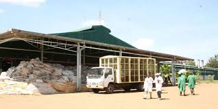
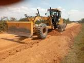
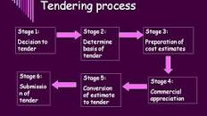

DIRECTOR GEOFFREY LANGAT
Farmers' Choice
1.Prompt collection of green leaves from tea buying centres
Farmers produce to be to transported to the factory when still fresh
2.Representation

Proper representation of farmers. I will ensure that all the farmers are well represented and gathered for.
3.Fertilizers
Farmers be given fertilizers any time they require. This will contrbute to nice harvest throughout the year
4.Flushing Cartels
There are punch of cartels that are known to 'drive' Kobel tea factory. You will be assure of clean up
5.Fair Distribution of Employment
Opportunities based on consultation and public advertisement of available opportunities
6.Fair Distribution of Tea Road Levies
We strive to ensure that access roads to the buying centres are addressed adequately Particular interest will be on what happened to our levies for the last 6 years and a thorough accont of the cash 2.5M misappropriated
7.Management Decision Making Process
Ensuring that there is wide management decision making process on key policy making process
8.Outsourcing and tendering of key functions of the factory
Issues such ass boiler,withering etc resulting on lose of job opportunities for the locals should bwe an all inclusive process through the AGMs